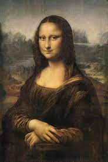
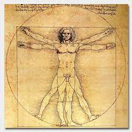
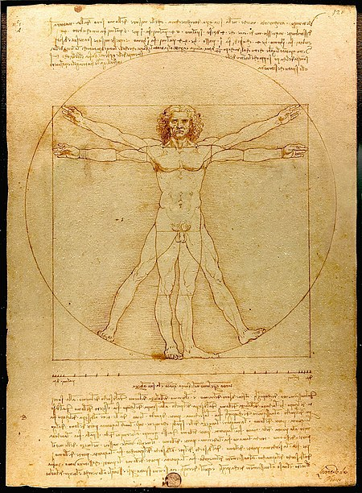

Леонардо да Винчи
Леонардо да Винчи е всеизвестен италиански архитект, изобретател, скулптор и художник от епохата на Ренесанса. Роден е на 15 април 1452 година в град Винчи. Той е прочут със своите картини, най-известните от които са ,,Мона Лиза" и ,,Тайната вечеря". Известен е и с многобройните си изобретения, изпреварили времето си, но останали само на хартия. При първия си период във Флоренция Леонардо оформя своите интереси, увлича се по архитектурата, анатомията, математиката. Той получава не само теоретична и художествена подготовка, но научава и разнообразни технически умения в областта на химията, металообработването, отливането на гипс, обработката на кожи, механиката и дърводелството. През втория си преиод във Флоренция, той усилено се занимава с геометрия и математически експерименти и почти се откъсва от живописта.
"Мона Лиза" 
Името Мона Лиза произлиза от биографията на Леонардо да Винчи, написана от Джорджо Вазари. В нея той определя седящата дама като Лиза, съпруга на богатия флорентински търговец Франческо дел Джокондо. „Мона“ е често срещано в италианския език сливане на „мадона“, което значи „моята дама“. Така името на картината означава Madam Lisa.
Вероятно Леонардо е започнал да рисува Мона Лиза през 1503 и според Джорджо Вазари я завършва четири години по-късно. Леонардо взима със себе си картината във Франция през 1516. След смъртта на Леонардо картината е отрязана, като са отстранени части от двете ѝ страни. Първоначално е имало колони от двете страни на фигурата, познати на изкуствоведите от ранните копия на творбата. Краищата на постаментите все още могат да се видят.
Витрувиански човек 
„Витрувиански човек“ е известна скица, придружена с бележки от Леонардо да Винчи, нарисувана около 1490 г. в един от неговите дневници. Картината изобразява гола мъжка фигура в две насложени едно върху друго положения с разперени ръце и крака, едновременно вписани в кръг и квадрат. Картината и текстът често са наричани Закон за пропорциите. Тя представлява перфектен пример за интереса на Леонардо към пропорциите. Като допълнение, картината дава основата на опитите на Леонардо да обвърже човека с природата. Според бележките на Леонардо в придружаващия текст, написан огледално, картината е нарисувана като опит за изучаване на пропорциите на мъжкото човешко тяло.
Пропорции 
Четири пръста са равни на една длан.|| Четири длани са равни на една стъпка|| Чест длани правят един лакът.|| Четири лакътя са един човешки ръст.|| Широчината на разперените ръце е равна на височината на човек.|| Разстоянието от корените на косата до долния край на брадичката е равно на една десета от ръста.|| Разстоянието от долния край на брадичката до темето е равно на една осма от ръста.|| Максималната широчина на раменете е равна на една четвърт от ръста.|| Разстоянието от лакътя до края на дланта е равно на една пета от човешкия ръст.|| Разстоянието от лакътя до ъгъла на подмишницата е една осма от ръста.|| Дължината на дланта е една десета от ръста.|| Разстоянието от долния край на брадичката до носа е една трета от дължината на лицето.|| Разстоянието от корените на косата до веждите е една трета от дължината на лицето.|| Дължината на ухото е равна на една трета от лицето.||